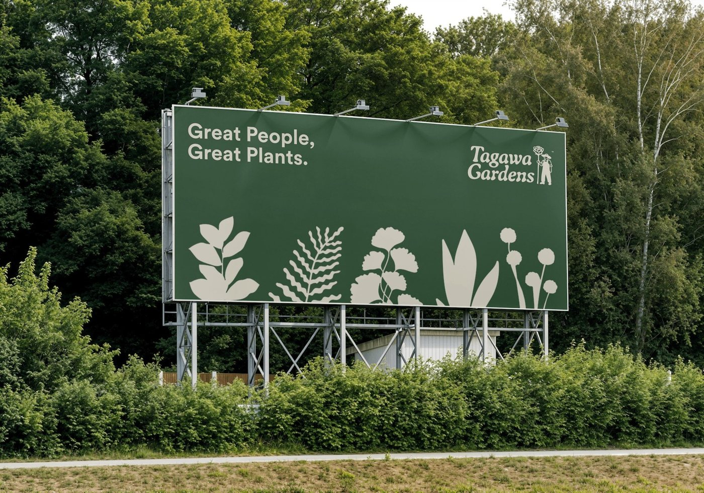
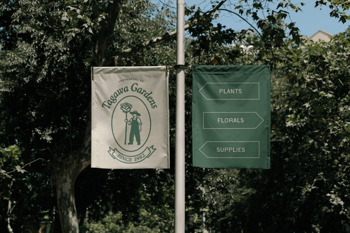
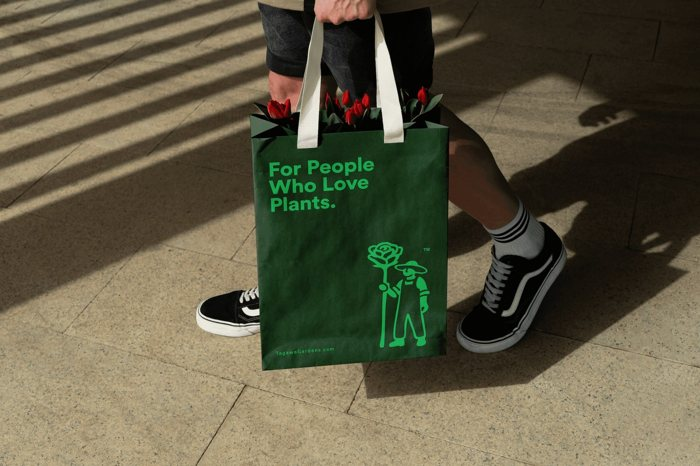
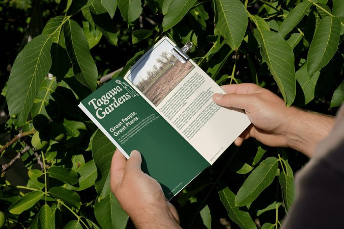

Tagawa Gardens
- Brand identity
- Illustration
- Signage
- Social
- What they needed
- A historic Colorado garden center, founded in 1982 with deep roots in roses, wanted to attract a new generation without losing the trust, warmth, and legacy locals know by heart.
- The idea
- A gardener holding an oversized rose: a nod to their origins that puts the human side of gardening front and center.
- How it carried through
- A monochromatic, nature-led system, a clear and direct type treatment, legible wayfinding across the property, and a new motto, “Keep Growing.”
- Why it's relevant to Water World
- A beloved Denver institution with decades of equity, refreshed for a new generation without losing what people already trust.



